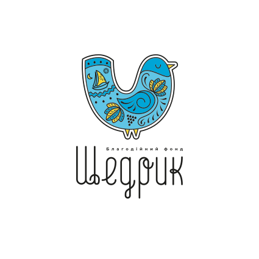
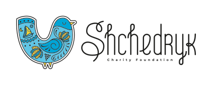
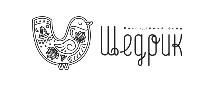
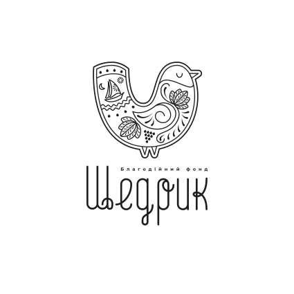

Кольори, типографіка, логотип, декоративні елементи та контент-блоки БО «Благодійний Фонд Щедрик». Усе, що використовується у брошурі А4 альбом, на одній сторінці — щоб синхронізуватися перед стартом.
Основа — небесно-блакитна гама «Щедрика». Жовтий і темно-синій — другорядні брендові акценти. Внизу — палітра напрямків роботи (FSLC, WASH, PROTECTION, SHELTER) для діаграми с.3.
Два брендових шрифти з брендбуку, обидва вільної ліцензії: Inter для тіла, чисел і UI; e-Ukraine Head для заголовків розворотів. Декоративний Fashion Boutique (комерційний) у цьому проєкті не використовуємо. Зразки нижче рендеряться фактичними шрифтами з assets/fonts/.
12 файлів у трьох версіях кольору (color · black · white), у двох орієнтаціях (горизонтальна · вертикальна) і двох мовах (UA · EN). Усі формати: SVG, PNG, EPS, JPEG, PDF, AI.






З брендбуку (с. «патерн») — три базові варіанти орнаменту з мотивами народного декору: Щедрик-пташка, човник, лотос, виноград, місяць, насіння. Підходить для обкладинок, форзаців, тла секцій-розділювачів, декоративних плашок.
Базова мова форм для розгорток: круги, плашки, шини-акценти, спліти, чверть-кругові закінчення, медальйон з патерну. Використовувати стримано — 1–2 елементи на спред.
Чотири кольорові категорії з ТЗ: FSLC (продовольча допомога), WASH (вода, санітарія, гігієна), PROTECTION (психосоціальна підтримка), SHELTER (зимування, непродовольчі товари).
Готові компоненти, які повторно з'являються в розворотах: статистичні картки, фактбокси, виноски, мета-стрічки, темна плашка для гарячої лінії.